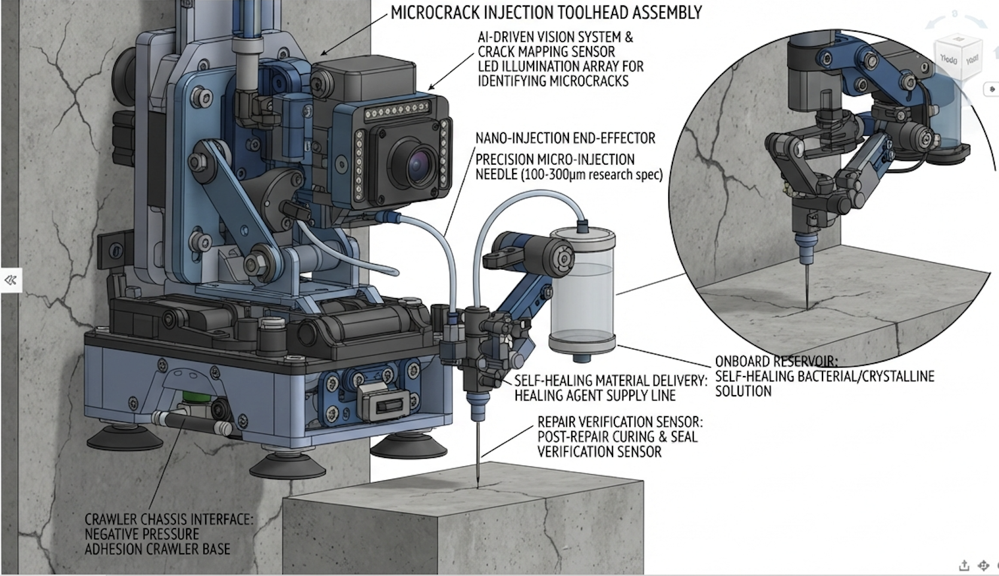

CivilSeal combines intelligent infrastructure assessment, robotic nondestructive evaluation, and biologically driven vascular repair to identify deterioration early and intervene precisely where it matters.

CivilSeal narrows large infrastructure networks down to specific structures and regions where detailed inspection and intervention matter most.
Rank structures using condition, materials, structural type, loading, age, repair history, environment, and hazard exposure.
Structural models and load paths identify regions where deterioration may be most consequential.
Deploy complementary nondestructive evaluation methods only where detailed inspection is needed.
Evaluate severity, structural significance, progression risk, and repair suitability.
CivilSeal integrates bridge condition, age, structural characteristics, loading, environmental exposure, hazards, repair history, and other available infrastructure data into an interactive geospatial decision-support platform.

Once damage is identified, targeted vascular access creates a pathway into internal crack networks so biological healing agents can reach the damaged region.
Engineered channels connect the concrete surface directly to subsurface cracks.
Agar hydrogel carries bacteria and nutrients into the targeted crack network.
Ureolytic bacteria promote microbially induced calcium carbonate precipitation.
Calcium carbonate formation develops within the targeted damaged region.
A robotic repair platform can localize confirmed damage, create targeted vascular access, deliver healing agents, and support post-repair verification.


Engineered for rapid national deployment, combining high-payload capacity with strategic regional coverage.

CivilSeal closes the loop by returning to repaired regions with nondestructive evaluation and comparing their condition with the original damage state.
Rescan repaired regions using complementary NDE.
Compare pre-repair and post-repair condition data.
Return verified results to the infrastructure condition model.
Use repair outcomes to improve future inspection and maintenance decisions.
CivilSeal connects nondestructive evaluation with emerging vascular biological repair. Complementary sensing technologies identify and characterize deterioration, while targeted biological intervention provides a pathway for recovery.